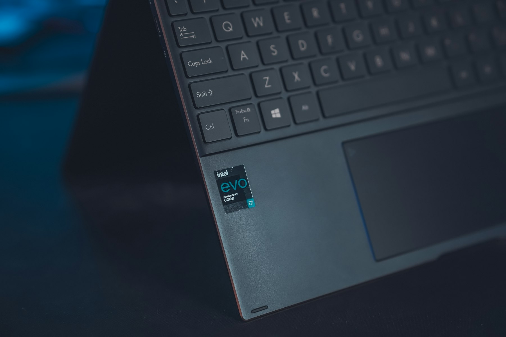

TL;DR
Opt for HoneyBook for simplicity or Zoho CRM for automation at $14/user/month. Evaluate your needs carefully to avoid overspending on features you don't need.
Quick Verdict: Best CRM Alternatives

For independent consultants, traditional CRM software like Salesforce or HubSpot can be overkill, both in complexity and cost. Options like HoneyBook, Zoho CRM, and Insightly provide streamlined functionalities suited to smaller business needs at a fraction of the cost, often without the steep learning curve associated...
Who Each Option Is Actually For
HoneyBook is ideal for solo consultants managing client projects and invoices, with entry-level pricing of around $39/month. Zoho CRM works better for teams who need comprehensive automation tools, suitable for groups up to 10 users, priced at $14/user/month...
Where the Differences Start to Matter
The choice between CRM tools isn't just about price; it's also about usability and tailored features. Traditional options offer extensive features that can overwhelm new users, while alternatives like HoneyBook are focused on client management and project tracking.
Here's a clearer picture:...
A Real Setup or Buying Scenario
Imagine you're a consultant who just closed three new clients. Setting up HoneyBook, for example, could take you as little as 30 minutes. You would create a streamlined pipeline for managing projects, easily sending contracts and invoices right from the platform...
Mistakes and Overkill Choices
Many consultants dive into purchasing a full-featured CRM, mistaking extensive options for value. One common mistake is choosing something like Salesforce with a starting price of $25/user/month, only to find it requires significant training and doesn’t align with their simple operational needs...
Final Recommendation by User Type
In conclusion, if you’re a solo freelancer looking for straightforward client management, HoneyBook is your best bet at $39/month. Teams needing automation should consider Zoho CRM for $14/user/month, which provides extensive features at a reasonable cost...
FAQ
What should I consider when selecting a CRM as a consultant?
Consider your budget, the specific features you need, and the time you're willing to invest in learning the tool.
Are there any CRM tools specifically designed for freelancers?
Yes, HoneyBook is specifically designed for freelancers, focusing on client management and project invoicing.
How do alternatives compare in setup time?
Simpler tools like HoneyBook can be set up in less than an hour, while more complex CRMs may require multiple hours or even days.
What is a common mistake in choosing CRM?
Choosing a feature-rich CRM without assessing actual needs can lead to wasted resources and operational confusion.
Can these tools scale as my business grows?
Most of these tools offer scalable features to accommodate growing business needs, especially as your client base increases.
This article has been reviewed for practical usefulness and is updated regularly when information changes.
Choose faster
Use this article to narrow the field then compare your top options by price, setup friction, and upgrade risk.
Search more articles
Find related tools, workflows, and guides.
Photo credits
- Photo 1: Onur Binay via Unsplash
- Photo 2: Samuell Morgenstern via Unsplash
- Photo 3: Everyday basics via Unsplash
- Photo 4: Shiqi ZHAO via Unsplash
- Photo 5: Adrian González via Unsplash